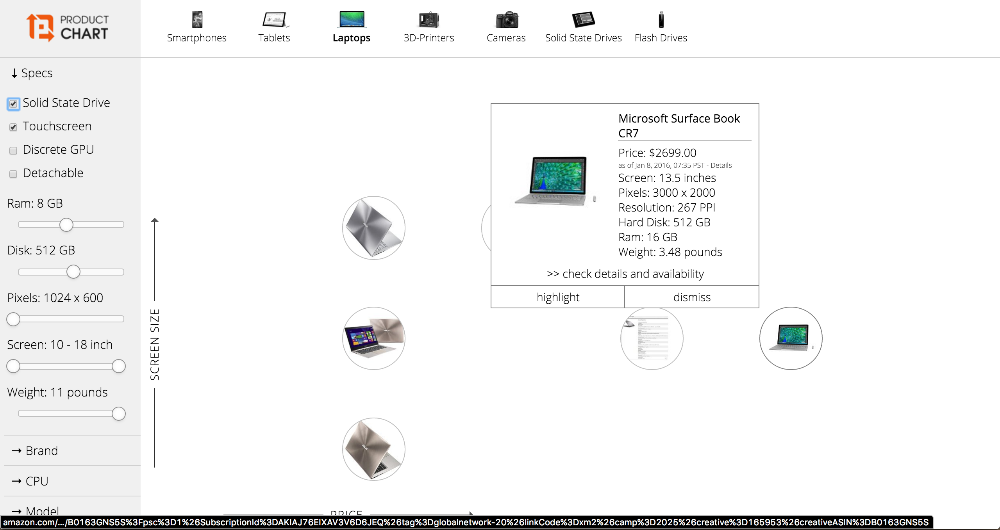
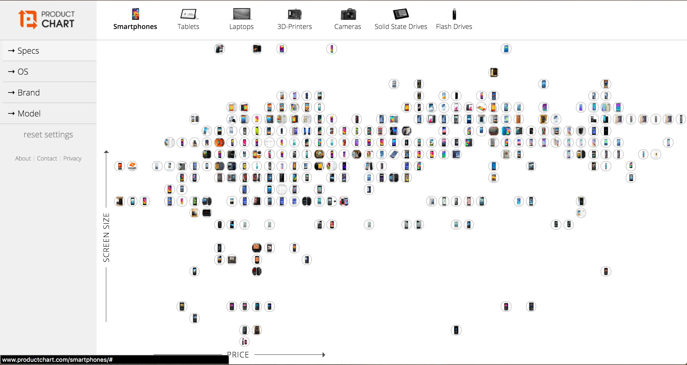

Changing Axes Selecting Attributes 
Selecting a Laptop Changing Products
The Laptop Comparison Tool has a great Visual Interface, and cleverly presents data about the various features and attributes that are involved in a laptop purchase decision. When a consumer makes a decision to buy a laptop, there are various factors involved in decided with brand and model to choose. The information for the various factors are spread out across the intenet, and have not been compiled into one comparison tool until this came into existence. With this tool, you are able to choose which features matter most to you (using very intuitive sliders and checkboxes) in the selection column on the left side of the web page. You can then choose how you would like to arrange the products (only the ones that satisfy your selections) in the grid on the right by choosing which axes to organize them with. As you select more features, the laptops that satisfy those selections arrange themselves in the grid on the right, as per the axes you selected. When you mouse over a certain laptop, you get to see it's individual properties, and can make informed decisions after seeing all your available options. This tool is also available to for products other than laptops, such as smartphones, tablets, and more.
This tool is extremely useful for they general public to make increasingly intelligent decisions about the tech they are buying. It organizes the information distributed over many different websites into a very user-friendly interface that is intuitive, easy-to-use, and easy-to-interpret. It is usually accurate, although some of its data is outdated. An improvement to this tool would be to include the sources of it's data, and the date of last update to the database. The accessibility for this tool is extremely high, as anyone with an internet connection can view and use this tool. The information presented is extremely clear, and provides high levels of flexibility as to how to organize the data. The animations from one graph to the next (after the user makes a selection in the left column) are a nice touch and add to the overall smooth, consistent 'feel' of this website. The thing that is most striking though is how it draws on a standard knowledge across almost all educated people, in that it uses a graph format that is relatively self explanatory. This means that the organization of the data does not have to be explained, and aids with its presentability.